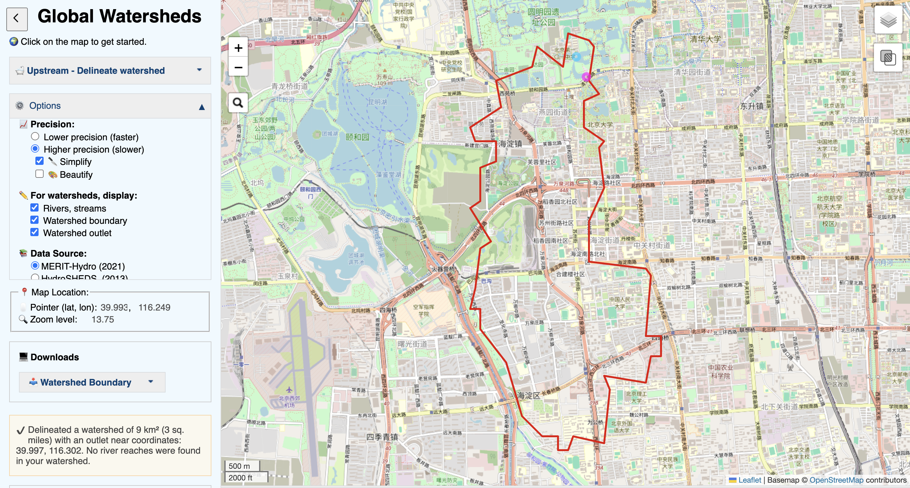
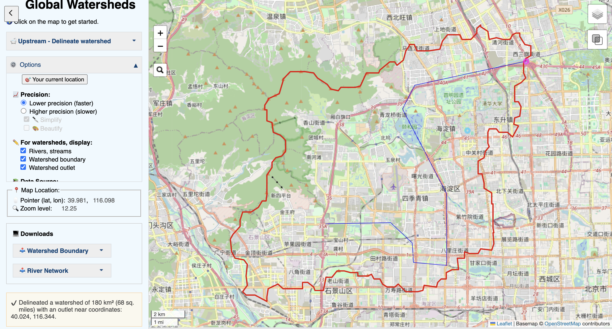
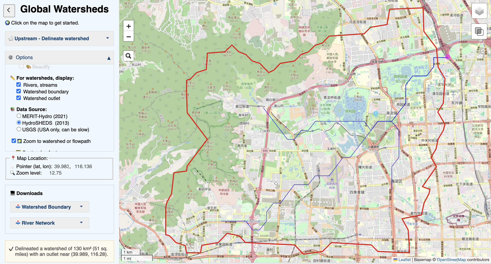
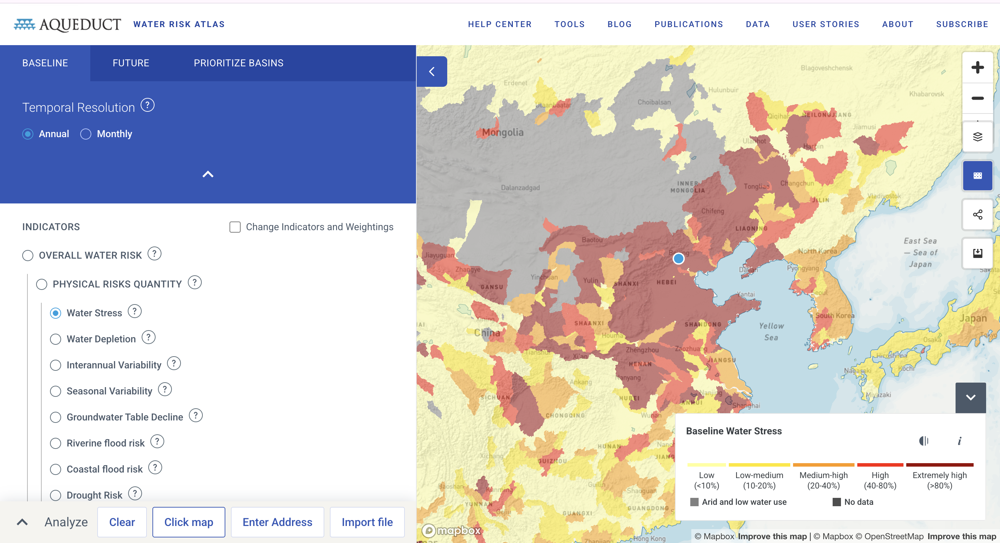

The question
Where does my site's water come from and where does its runoff go, and who else has a claim on it?
The data
Catchment Delineation: MERIT-Hydro (2021) and HydroSHEDS (2013) datasets via Global Watersheds. Higher precision vs Lower precision. No sign-in required.
Water Risk Index: Aqueduct 4.0 Water Risk (WRI), Baseline Annual. Baseline period 1979–2019, data vintage April 2023. Licence: CC BY 4.0.
The method
I used my site coordinates (40.000, 116.300) in the Global Watersheds app. I ran the delineation three times: first with Higher Precision on MERIT-Hydro, then Lower Precision on MERIT-Hydro, and finally Lower Precision on HydroSHEDS. For the water risk, I attempted to use ArcGIS Map Viewer, but due to network timeouts loading the multi-layer service, I used the WRI Aqueduct Water Risk Atlas directly to read the Baseline Water Stress for Beijing.
The evidence




What I found
1. Expectation. I predicted water would flow southeast. The regional catchment does flow roughly southeast, but the exact boundary is highly sensitive to the dataset. My guess of the catchment size was around 500 km², but the software returned everything from 9 km² to 180 km².
2. The boundary. My catchment area varied wildly: 9 km² (MERIT Higher), 180 km² (MERIT Lower), and 130 km² (HydroSHEDS Lower). The pour point moved significantly. On flat urban terrain, the software struggles to find a defined channel, so it snaps the outlet to whatever coarse river trunk it can find. It is not an accuracy issue; it is the software deciding which river I meant.
3. The unit. The baseline water stress for the Haihe basin (where Beijing is located) is Extremely High (>80%). This number is computed for a massive sub-basin that crosses provincial borders (Hebei, Beijing, Tianjin, etc.), which is thousands of times larger than my actual site (a few city blocks).
4. The crossing. The one thing at my site that crosses the divide is the South-to-North Water Transfer Project. The water in my tap comes from the Danjiangkou Reservoir in the Yangtze basin, thousands of kilometres away. The delineated catchment only describes rain on the roof, not the actual water supply. Additionally, urban sewer pipes actively move runoff out of this boundary, ignoring the topography entirely.
5. Limits. This map cannot support a claim about water quality or whether my building has enough water. The index counts volume, meaning water that is present but too polluted to use still counts as "supply".
What this does not show
Proxy sentence: I am using the delineated boundary at my site to stand for where my site's water actually goes and comes from, and it might fail because the routine has no representation of a pipe or a canal, so it describes rain on the roof and not the human-managed supply.
It also does not show groundwater, which is invisible to a surface water catchment.
AI-usage disclosure
AI-assisted for tidying the HTML and checking structure, using DeepSeek. The delineations, the three-dataset comparison, the thing that crosses the boundary and the proxy sentence are my own.
Personal reflections have been submitted privately in Brightspace.